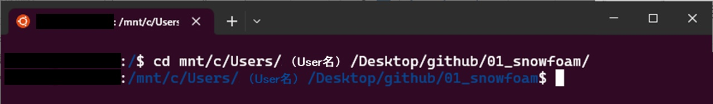
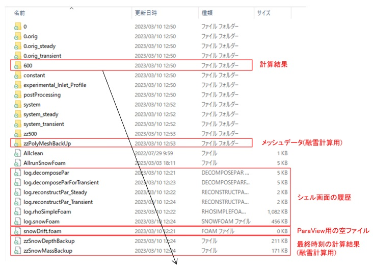
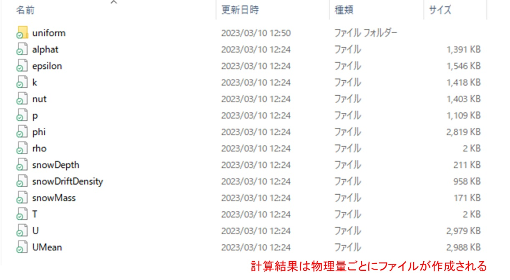

(2) 計算の実行手順
風雪・融雪シミュレーションでは、ターミナルに計算指示を直接入力せず、シェルスクリプトに記述し、自動的に実行します。シェルスクリプトの実行内容については後述のシェルスクリプト(風雪計算時)、シェルスクリプト(融雪計算時)を参照してください。
➀ Ubuntuのターミナルを起動し、ケースディレクトリに移動してください。

➁ シェルスクリプトを実行します。
なお、前準備で用意したデータは、ケースディレクトリ直下の各フォルダにありますので、そのままシェルスクリプトを実行すれば計算が始まります。
$ ./AllrunSnowFoam
問題なければ、ターミナルに経過時刻や途中結果が表示されます。
想定外の終了をした場合は、「../CASE/log.○○」を確認して、問題を取り除いてください。
再計算する場合は、ケースディレクトリを初期化してから、手順②を実行してください。
$ ./Allclean
計算が終了すれば、時刻フォルダ「../CASE/○○(時刻)」などが作成されます。この中には、物理量毎のファイルが格納されています。ファイルについては、数値がセル番号ごとに羅列されているだけなので、ParaViewなどの可視化ソフトがないと確認は困難です。
「○○BackUp」のフォルダ・ファイルは、融雪計算用に作成された計算メッシュと計算結果(最終時刻)のデータです。


並列計算を行った場合は、「processor〇」に計算結果が出力されます。シェルスクリプトでは、計算の最後にそれらを結合する命令があるため、「../CASE/○○(時刻)」も出力されることになっています。
※GitHubのアップロードできるファイル数の都合上、サンプルデータの「processor〇」は削除しています。